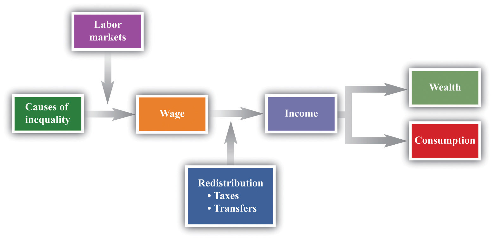

Table 13.1 "Wealthiest Individuals in the United States" shows the top 10 wealthiest people in the United States in 2006 and 2010. These names come from lists compiled each year by Forbes magazine of the 400 wealthiest individuals.Forbes has many such lists available for your study (http://www.forbes.com/lists). You almost certainly recognize some of the names, such as Bill Gates and Michael Dell from your dealings with the computer industry. Other names may be less familiar to you.
Table 13.1 Wealthiest Individuals in the United States
| Rank | 2006 List | 2010 List |
|---|---|---|
| 1 | William H. Gates III | William H. Gates III |
| 2 | Warren E. Buffett | Warren E. Buffett |
| 3 | Sheldon Adelson | Lawrence J. Ellison |
| 4 | Lawrence J. Ellison | Christy Walton |
| 5 | Paul G. Allen | Charles Koch |
| 6 | Jim C. Walton | David Koch |
| 7 | Christy Walton | Jim C. Walton |
| 8 | S. Robson Walton | Alice Walton |
| 9 | Michael Dell | S. Robson Walton |
| 10 | Alice L. Walton | Michael Bloomberg |
Whether or not you know their names, you surely have difficulty conceiving of their wealth. Bill Gates’s net wealth in 2010 was estimated at $54 billion, which is $9 billion more than the wealth of financier Warren Buffett. To give some idea of what this means, if Gates were to receive no further income for the rest of his life but wanted to use up all his wealth before he died, he would need to spend it at a rate of about $5 million a day. The person at the bottom of the Forbes list—that is, the 400th wealthiest person in the United States—had a net worth of a mere $1 billion.
Comparing the two lists, you can see that some of the names and rankings changed between 2006 and 2010. The top two names are the same in both years, but the rest of the list is different. Sheldon Adelson, Paul Allen, and Michael Dell were in the top 10 in 2006 but not in 2010. In 2010, Charles and David Koch joined the top 10. Even among the very rich, there is some instability within the distribution of wealth.
The Forbes list was of the wealthiest Americans. Only the top 3 from the 2010 list are on the list of the world’s wealthiest individuals. In 2010, the wealthiest individual in the world was Carlos Slim Helu, a Mexican businessman who made his fortune from real estate speculation and the telecom industry. Others in the world top 10 come from India, France, Brazil, Spain, and Germany. Forbes also publishes many other lists, including a list of the most powerful celebrities. At the top of that list in 2010 was Oprah Winfrey, who earned $315 million. (Notice that this is her income—the amount she earned in the year—while Table 13.1 "Wealthiest Individuals in the United States" is based on the total wealth accumulated.) Also on the list were Beyonce Knowles, Lady Gaga, Tiger Woods, Johnny Depp, and others from the entertainment industry.
When Forbes published its 2007 list, it also published an article by economist Jeffrey Sachs discussing the other extreme of the wealth distribution: the world’s poorest households. Sachs pointed out that there are about a billion households in the world living on about $1 a day. He calls this group the Forbes One Billion. Sachs calculates that the richest 946 households have the same earnings as the Forbes One Billion. The discussion in Forbes and the calculations by Sachs make it clear that there are immense differences in income and wealth across people in the world. This is true both if we look across countries, comparing the richest to the poorest nations, and if we look within countries.
These differences are persistent, meaning that an individual’s place in the income or wealth distribution is not likely to change significantly from one year to the next. If you are poor this year, you will probably be poor next year. It is not impossible for people to become rich overnight, but it does not happen often. In fact, such differences persist not only from year to year but also from generation to generation. This doesn’t mean that everyone is completely stuck in the same place in the economic hierarchy. There are opportunities for children to become much richer—or much poorer—than their parents. But when we look at the data, we will see that the income level of parents is an important indicator of the likely income of their children.
One goal of this chapter is to document some facts of inequality. This is not a straightforward task. For one thing, it is not even clear what measure of a household’s economic success we should look at. Is it more useful to look at inequalities in income, wealth, consumption, or some other variable altogether? We also get a different picture if we look at these differences at a point in time or across time.
Data on inequality matter for discussions about taxation and redistribution. Governments throughout the world levy a number of different taxes, including taxes on the income people earn and the purchases that they make. Some of the revenues from these taxes are transferred to poorer households in the economy. The taxation of some households and the transfer of the resulting revenue to other households make up the redistribution policies of the government. We are interested in documenting facts about inequality in large part because we need these facts to have a sensible discussion about how much redistribution we—as a society—would like.
In this chapter, we therefore consider the following questions.
What determines the distributions of income, wealth, and consumption?
Is the market outcome “fair” or is there a need for government intervention?
What are the consequences of government redistributions of income and wealth?
A road map for this chapter is shown in Figure 13.1 "Road Map". We begin with some facts about inequality and introduce some techniques to help us describe the amount of inequality both in a country and across countries. Then we consider some explanations of why we observe inequality in society. We observe first that people have different abilities, which translate into differences in income. Then we consider how individual choices—about education, training, and effort—are a further source of difference.
Figure 13.1 Road Map
This figure shows a plan for this chapter. We investigate the different underlying causes of inequality and explain how these translate, through labor markets in the economy, into differences in wages. We then explain how government policies affect the distribution of income in the economy. We also look at what determines the distribution of income, consumption, and wealth.
We then turn to a more abstract discussion of some different philosophical views of inequality. These different views influence current thinking about the distributions of income, wealth, and consumption and help us understand why people have such different opinions about equality and redistribution. We consider how redistribution might affect people’s incentives to work, study, and cheat. Finally, we turn to economic policies that affect inequality.